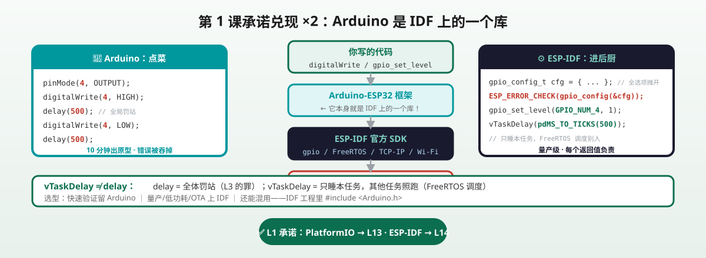

阶段五 · 进阶专家 ｜ 难度：★★★★★ ｜ 预计用时：60–75 分钟（本课理论密度最高）
本课材料：完成第 13 课的电脑（PlatformIO 已装，它原生支持 ESP-IDF 框架） 无硬件替代：ESP-IDF 有官方模拟器（QEMU），但本课重点是"看懂两种世界观"，代码对照为主

同一颗 LED、同一个闪灯程序，用两种框架各写一遍——左边是你写了一个学期的 Arduino，右边是 Espressif 官方的 ESP-IDF。代码量差 3 倍，但你突然"看见"了 Arduino 帮你藏起来的一切。
第 1 课的原话到期了：
第 1 课：……官方工业级框架 ESP-IDF 是第 14 课的主角。先别贪多。
兑现时刻（第二个）。 这一课不追求"学会 IDF"（那是几十小时的事），而是掀开盖子看清楚：Arduino 到底替你做了什么、IDF 的世界观长什么样、什么项目该留在 Arduino、什么必须上 IDF——做出正确选型判断，你就具备了架构师的第一块能力。
本课学习目标（完成后你将拥有）：
gpio_config / ESP_ERROR_CHECK / Kconfig 配置菜单loop() 消失了，多任务变成"真的多任务"先揭示一个多数人学完一整套教程都不知道的事实：
┌─────────────────────────────────────────────┐
│ 你写的代码（digitalWrite / delay / Wire…） │ ← Arduino 框架层
├─────────────────────────────────────────────┤
│ ESP-IDF：驱动、TCP/IP、Wi-Fi、蓝牙、FreeRTOS │ ← 真正干活的官方 SDK
├─────────────────────────────────────────────┤
│ ROM / 硬件寄存器（GPIO、SPI、ADC 的物理开关） │ ← 芯片本身
└─────────────────────────────────────────────┘
Arduino-ESP32 本身就是一个"跑在 ESP-IDF 上的库"——你调用的
digitalWrite，内部最终变成 IDF 的gpio_set_level()，再变成寄存器上的一位。所以"学 Arduino"和"学 IDF"不是二选一：你已经会用上层，这一课往下挖一层。这也解释了为什么 Arduino 能这么快——它把 IDF 几百页的文档藏进十几个函数。
为什么官方还要搞两层？ Arduino 面向创客与快速验证（10 分钟出原型）；IDF 面向产品量产（要功耗控制、要任务优先级、要安全启动、要 OTA 升级、要 10 年维护）。同一家官方，两种交付物——你现在要懂它们各自的边界。
同一个闪灯，IDF 版（C 语言，PlatformIO 的 framework = espidf）：
#include "driver/gpio.h"
#include "freertos/FreeRTOS.h"
#include "freertos/task.h"
#define LED_GPIO GPIO_NUM_4
void app_main(void) { // ← IDF 的"入口"，不是 setup()
// ① 一次性配置：结构体把话说清楚
gpio_config_t io_cfg = {
.pin_bit_mask = 1ULL << LED_GPIO, // 要配置哪些脚（位掩码）
.mode = GPIO_MODE_OUTPUT, // 输出模式
.pull_up_en = GPIO_PULLUP_DISABLE,
.pull_down_en = GPIO_PULLDOWN_DISABLE,
.intr_type = GPIO_INTR_DISABLE,
};
ESP_ERROR_CHECK(gpio_config(&io_cfg)); // ② 检查返回值！出错直接停
while (1) { // ③ 没有 loop()，自己写死循环
gpio_set_level(LED_GPIO, 1);
vTaskDelay(pdMS_TO_TICKS(500)); // ④ FreeRTOS 的延时（让出 CPU！）
gpio_set_level(LED_GPIO, 0);
vTaskDelay(pdMS_TO_TICKS(500));
}
}
和 Arduino 版逐行对照，五个关键差异：
| # | Arduino | ESP-IDF | 说明 |
|---|---|---|---|
| 1 | setup()/loop() 自动被调用 |
app_main()，框架不接管你的循环 |
谁掌控流程：Arduino 接管，IDF 交给你 |
| 2 | pinMode(4, OUTPUT) 一句话 |
gpio_config_t 结构体 + gpio_config() |
IDF 把所有选项摆在台面上——没有隐式默认 |
| 3 | 出错通常忽略/打印 | ESP_ERROR_CHECK() 宏强制检查 |
工业级：每个返回值都要负责 |
| 4 | delay(500) 纯等待 |
vTaskDelay(pdMS_TO_TICKS(500)) 让出 CPU |
关键差异，下节展开 |
| 5 | 引脚号写 4 |
GPIO_NUM_4 枚举 |
类型安全，防止把 999 传进去 |
核心气质差异一句话：Arduino 帮你做决定（快），IDF 要求你做所有决定（准）。写 Arduino 是"点菜"，写 IDF 是"进后厨"。
loop() 消失之后，多任务怎么办这是本课最重要的一课知识，也是 IDF 的灵魂：
ESP-IDF 内置 FreeRTOS（实时操作系统）——"多任务"从"你在 loop 里轮流照顾"变成"操作系统真的并行调度"。
回看你一路走来的多任务演进，正好是四级台阶：
L3 millis 计时 —— 一个 loop 里"到点干活"（协作式）
L10 三任务非阻塞 —— 一个 loop 里三条时间线（协作式，全靠你不偷懒）
L13 拆模块 —— 结构上分开了，执行还是一个人轮流
L14 FreeRTOS 任务 —— 每个任务一个独立栈，CPU 真·切换（抢占式）
// 任务 A：闪灯（独立执行流）
void task_led(void *arg) {
int level = 0; // 用变量维护电平（OUTPUT 模式下读引脚恒为 0）
while (1) {
level = !level;
gpio_set_level(LED_GPIO, level);
vTaskDelay(pdMS_TO_TICKS(500));
}
}
// 任务 B：读传感器（独立执行流）
void task_sensor(void *arg) {
while (1) {
float t = bmp_read_temp();
publish_mqtt(t); // 网络慢？没关系，不挡别人
vTaskDelay(pdMS_TO_TICKS(5000));
}
}
void app_main(void) {
xTaskCreate(task_led, "led", 2048, NULL, 1, NULL); // 优先级 1
xTaskCreate(task_sensor,"sensor",4096, NULL, 2, NULL); // 优先级 2
// app_main 结束也没关系，任务继续跑
}
vTaskDelay vs delay 的天壤之别（把第 3 课的知识推到极致）：
Arduino delay() |
FreeRTOS vTaskDelay() |
|
|---|---|---|
| 效果 | 整个 loop 冻结（全局罚站） | 只有当前任务睡，其他任务照常跑 |
| 谁在跑 | 单任务轮流 | 操作系统按优先级调度 |
| 抢占 | 不可能（全靠你让） | 高优先级任务可打断低优先级 |
💡 注意一个精妙的巧合：IDF 里"任务睡 500ms"也要写延时——但它是"我睡，你们继续"。所以第 3 课教你的"millis 非阻塞"在 IDF 里依然有价值（同任务内的精细节奏），而跨任务的等待，直接用
vTaskDelay睡掉更干净。两套哲学不矛盾：单任务内省着用，任务间大方睡。
什么时候必须上 FreeRTOS/IDF？ 当你的"loop 轮流照顾"开始顾此失彼时：Wi-Fi 重连 + MQTT + 传感器采样 + 屏幕刷新 + 按键 + OTA 检查——6 条时间线手写 if 已经难以保证实时性，就该升级了。第 10~12 课你手写的三任务结构，就是 IDF 任务的"穷人版"——理解了它，学 xTaskCreate 只是换语法。
① sdkconfig——图形化配置菜单
IDF 的很多能力（不开蓝牙省 300KB、调任务看门狗超时、开 802.11n…）用 idf.py menuconfig 的蓝底菜单勾选——相当于把 Arduino"工具→菜单"里没有的几百个选项全部开放。PlatformIO 里对应 sdkconfig.defaults 文件。"可裁剪"是工业级的标志：产品不需要的功能，从固件里彻底裁掉，省 Flash 省电。
② 分区表与 OTA IDF 工程会生成分区表（Partition Table）：Flash 被划分成 app0 / app1 / nvs / spiffs 等区域——app0/app1 双槽正是 OTA（空中升级）的基础：新固件写进备份槽，校验通过再切换。"产品要能远程升级"这一条，就足以让量产项目选择 IDF（Arduino 也能做 OTA 但要自己拼）。
📌 选型准则（本课毕业金句，背下来）：
场景 选择 理由 学习、验证想法、创客作品 Arduino（你已会） 最快出原型，生态库多 3~6 个月的产品、团队协作 Arduino + PlatformIO（L13） 工程化够用 量产、低功耗、OTA、要维护 5 年+ ESP-IDF 官方一手支持、可裁剪、实时性有保障 要用 Arduino 又要 IDF 能力 混合：IDF 工程里调 Arduino 库（ #include <Arduino.h>可用）官方支持的"逃生舱"
第 13 课的工程改一个词就能切框架——这就是 L13 说的"双环境"：
[env:esp32dev-idf]
platform = espressif32
board = esp32dev
framework = espidf ; ← 只改这里！arduino → espidf
monitor_speed = 115200
src/main.c 放上面新知识一的代码（注意：IDF 默认用 .c，C 语言），pio run -t upload——第一次构建会下载 IDF 工具链（约 2GB，耐心）。灯按 500ms 闪起来的那一刻，你已经用两种框架点亮过同一颗 LED 了。
💡 对照实验（本课的仪式感）：把
[env]切回arduino，同一份代码编译会报错——两种世界观语法不兼容，但硬件是同一块。理解这一点，你就能看懂招聘要求里"熟悉 Arduino/ESP-IDF 任意其一"的真正含义：框架是工具，底层能力是通用的。
// Arduino：5 行核心，框架全包了 void setup() { pinMode(4, OUTPUT); // 配置 = 一句话 } void loop() { digitalWrite(4, HIGH); // 出错？不存在的，它替你吞了 delay(500); // 全局罚站式等待 digitalWrite(4, LOW); delay(500); }
四层台阶 = 你的学习轨迹：L3 学了上层怎么用，本课看懂下层怎么接——两层都见过，招聘要求里"熟悉任一框架"你都能答。
上图是两种框架"闪灯"的逐行对照与分层结构图——点按钮切换视角，看 digitalWrite 是如何一步步落到 gpio_set_level 再到寄存器的。
vTaskDelay 和 delay 的本质区别（单任务睡 vs 全局罚站）framework = espidf 构建成功（或至少看懂了步骤与工具链下载的必然性）全部打勾 → 你打通了从创客到工程师的最后一层认知。最后一课，看看 AI 如何改变嵌入式的开发方式。
xTaskCreate 任务，观察它们独立运行——和 L10 手写三任务结构对比，写 100 字感想。pio run -t menuconfig 打开配置菜单，找到 FreeRTOS 的 tick rate 与看门狗选项——感受"几百个开关全部向你开放"的工业级配置面。#include <Arduino.h> 然后调 digitalWrite——官方支持的混用方式，理解"逃生舱"怎么用。esp_light_sleep_start()——为什么 IDF 才能做"纽扣电池跑一年"的传感器？（Arduino 的 delay 做不到深度睡眠管理）| 现象 / 报错关键词 | 原因 | 解决办法 |
|---|---|---|
| 首次构建下载 2GB+ 卡住 | IDF 工具链首次下载（正常） | 等待；配置镜像加速 |
app_main 没被调用 |
文件不是 main.c / 放错目录 |
确认 src/main.c；入口名必须是 app_main |
undefined reference to gpio_config |
没声明组件依赖 | idf.py 工程需在 CMakeLists.txt/Kconfig 声明 driver 组件；PIO 检查 sdkconfig |
ESP_ERROR_CHECK 停机打印断言 |
真的出错了（配置非法） | 看它打印的错误码与文件行号——这是特性不是 bug |
.ino 文件在 espidf 下编译失败 |
框架切换后语言/入口都不兼容 | IDF 用 .c + app_main；或切回 arduino 环境 |
vTaskDelay 不生效/任务不跑 |
没进 FreeRTOS 调度（写在了启动早期） | 放在 app_main 里 app_main 本身是任务，可直接用 |
| 任务栈溢出（Stack overflow） | xTaskCreate 栈给太小（默认常不够） |
从 4096 起步；printf/浮点运算要更多 |
找不到 sdkconfig/分区表 |
工程不是完整 IDF 结构 | 用 pio init 生成 IDF 骨架，或参考模板 |
| Arduino 库在 espidf 下用不了 | 库依赖 Arduino 框架 | 加 #include <Arduino.h> 混用，或该库只在 arduino 环境用 |
| 构建成功但烧录后无日志 | 监视器波特率/引脚（USB-JTAG）差异 | monitor_speed=115200；部分板用 USB-Serial/JTAG 口 |
两层地基都看过了——最后一课，把目光投向正在改变一切的变量：AI。第 15 课（毕业模块）：AI 专题——从"用 AI 写代码"（本教程你已经在用的对话式开发），到"让 AI 跑在板子上"（边缘 AI / TinyML：语音唤醒、手势识别、异常检测的概念与路线图）。你会得到一份毕业后的进阶地图：学什么、做什么项目、往哪个方向深入——14 课点的 15 个灯，最后一课把火交到你手里。
本课程系列：从点亮一盏灯，到设计一台会自己思考的机器。